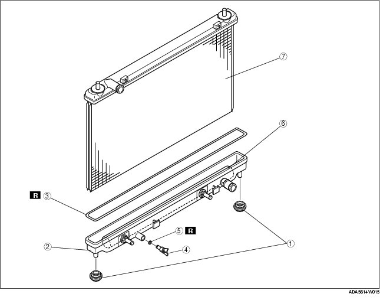

1. Disassemble in the order indicated in the table.
2. Assemble in the reverse order of disassembly.

.
|
1
|
Mount rubber
|
|
2
|
Radiator outer tank (in tank oil cooler)
|
|
3
|
O-ring
|
|
4
|
Drain cock
|
|
5
|
Gasket
|
|
6
|
ATF cooler
|
|
7
|
Radiator
|
1. Inspect the height of the header tabs.
2. Insert the end of a medium tip screwdriver between the end of the header tab and the outer tank.
3. Pivot the screwdriver to pry the tab away from the tank and repeat the procedure for each tab.
4. Remove the radiator outer tank and O-ring (gasket) from the core header when all of the tabs are opened.
5. Inspect the gasket surface of the radiator core header to ensure it is clean and free of foreign material or damage.
6. Inspect the radiator outer tank for warping. If it is warped, replace radiator tank.
1. Install a new O-ring and ensure it is not twisted.
2. Position the radiator tank in the original direction to the core using care not to scratch the tank sealing surface with the header tabs.
3. With the jaws of locking-type pliers (vise grips) closed and locked, turn the adjusting screw to position the jaws against the drill bit with the diameter measured (height) in the removal procedure 1. Tighten the lock nut on the adjusting screw against the handle to lock the adjustment in place.
4. Squeeze the header tabs down in the order as shown against the lip of the radiator outer tank base with the locking-type pliers while rotating the pliers toward the tank.
5. Verify that the height of the header tabs is same as the height before removal.
6. Inspect for leakage from radiator. (See ENGINE COOLANT LEAKAGE INSPECTION [ZY].)